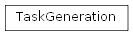

taskGenerator module¶
taskGenerator Module¶
| Author: | Dominic Hunt |
|---|
Classes¶
Task() |
The abstract tasks class from which all others inherit |
TaskGeneration(task_name[, parameters, …]) |
Generates task class instances based on a task and a set of varying parameters |
Class Inheritance Diagram¶

| Author: | Dominic Hunt |
|---|
-
class
taskGenerator.TaskGeneration(task_name, parameters=None, other_options=None)[source]¶ Bases:
objectGenerates task class instances based on a task and a set of varying parameters
Parameters: - task_name (string) – The name of the file where a tasks.taskTemplate.Task class can be found
- parameters (dictionary of floats or lists of floats) – Parameters are the options that you are or are likely to change across task instances. When a parameter
contains a list, an instance of the task will be created for every combination of this parameter with all
the others. Default
None - other_options (dictionary of float, string or binary valued elements) – These contain all the the task options that describe the task being studied but do not vary across
task instances. Default
None
-
iter_task_ID()[source]¶ Yields the tasks IDs. To be used with self.new_task(expID) to receive the next tasks instance
Returns: expID – The ID number that refers to the next tasks parameter combination. Return type: int